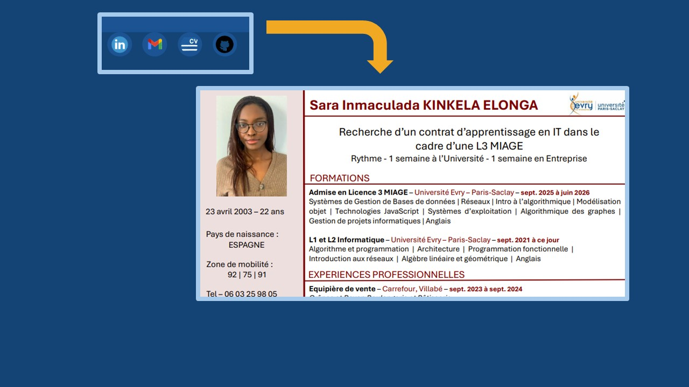
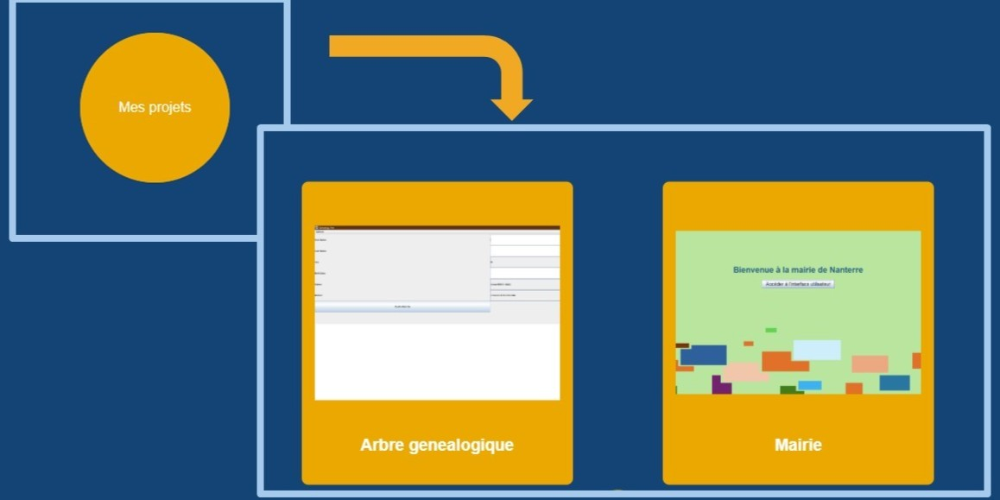
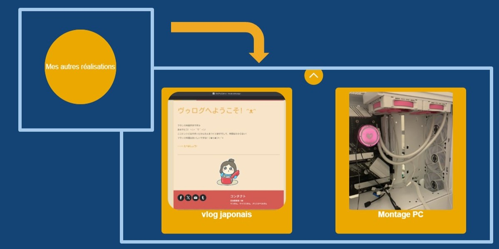

Projet académique mené en licence 2 à l’Université d’Évry (année 2023/2024), portant sur la conception d’un arbre généalogique.
Projet académique mené en licence 2 à l’Université d’Évry (année 2024/2025), portant sur la conception d’un système de gestion des citoyens au sein d’une mairie.
Projet réalisé en classe de 1ère au Lycée Paul Langevin à Suresnes, en cours de japonais, portant sur la création d’un vlog de recettes françaises.
Projet initié en septembre 2023, portant sur la conception et l’assemblage d’un PC sur mesure.
Je suis Sara et j’ai été admise en licence 3 MIAGE en alternance. Je suis donc actuellement à la recherche d’une alternance à partir de septembre 2025, pour une durée d’un an, avec un rythme d’une semaine en entreprise et une semaine à l’université. Ce portfolio a pour but de vous en apprendre davantage sur moi, à travers mes projets réalisés à l’université et mes créations personnelles. Je vous invite à découvrir l’organisation de mon portfolio.
 Vous pouvez consulter ici mes liens, notamment mon CV. Je vous invite à explorer avec curiosité.
 Mes projets reflètent mon parcours et mes compétences. Le plus récent étant la mairie
 Finalement, mes autres réalisations sont moins axées sur la programmation, mais je les trouve intéressantes et elles vous permettront de mieux me connaître.
Je suis Sara et j’ai été admise en licence 3 MIAGE en alternance. Je suis donc actuellement à la recherche d’une alternance à partir de septembre 2025, pour une durée d’un an, avec un rythme d’une semaine en entreprise et une semaine à l’université. Ce portfolio a pour but de vous en apprendre davantage sur moi, à travers mes projets réalisés à l’université et mes créations personnelles. Je vous invite à découvrir l’organisation de mon portfolio.